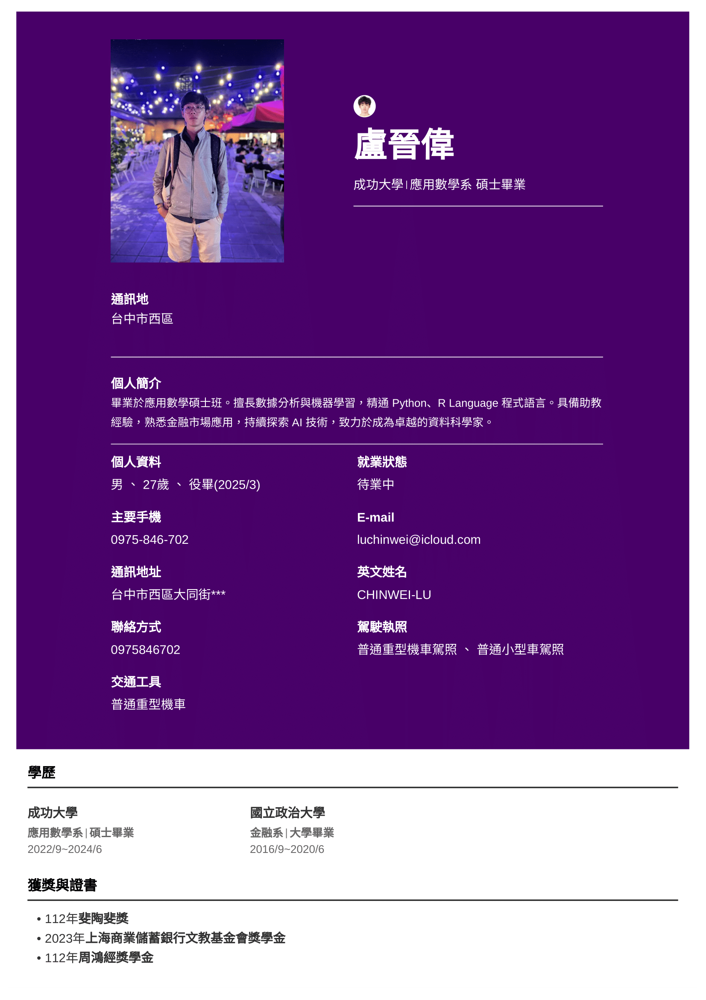
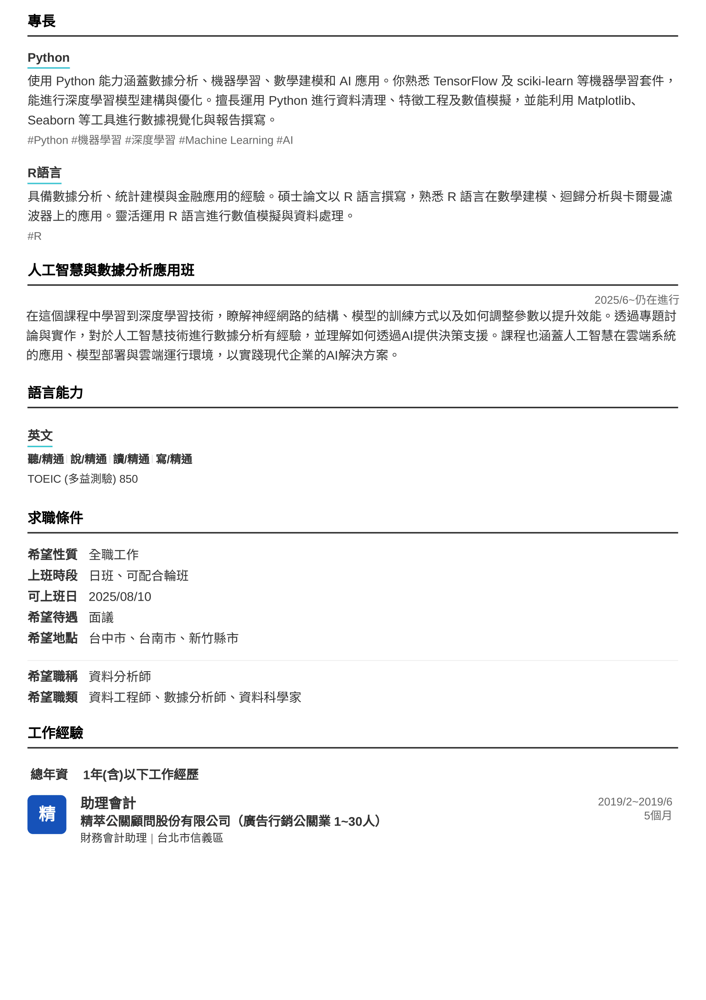
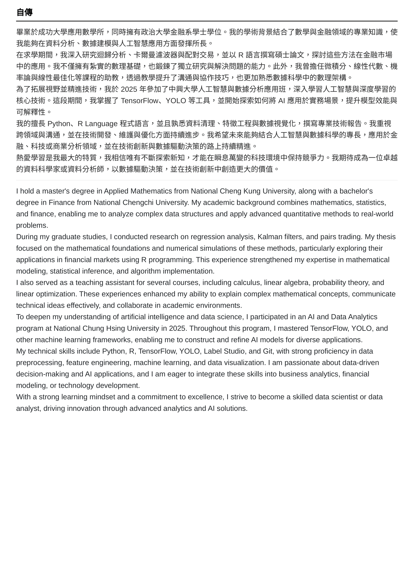

🧠 About Me
I'm passionate about language learning, Python programming, and diving into the mechanics of computer vision. Whether it's fine-tuning kanji phrasing or exploring YOLO applications—I'm always learning.
📄 My Resume



💡 Projects
- YOLO Annotation Debugger: Script for analyzing and converting mislabeled detection datasets.
- Grammar Insight Tool: Python app to detect subtle grammatical tones in English writing.
- Kanji Phrasing Analyzer: Japanese NLP script for revising kanji-heavy sentences for native flow.
📫 Contact
Find me on GitHub or drop a message at your.email@example.com